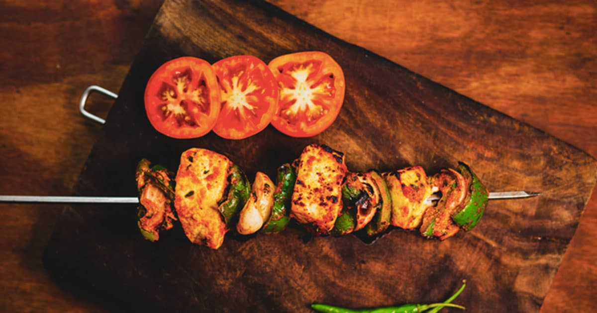

Paneer Tikka

Description
Paneer cubes are marinated in flavourful masalas and shallow-fried until golden and crispy. Sprinkle some chaat masala on top and serve hot with mint chutney.
Total cook time :25 mins
Preparation time :15 mins
Cook time :10 mins
Recipe Servings :4
Difficulty to cook :Easy
Ingredients
- 200 gms Paneer cubes
- 1/2 cup Besan
- 1/4 tsp Ajwain
- to taste Salt
- 1 tsp Ginger-garlic paste
- 1 tsp Garam masala
- 1 tsp Red chilli powder
- 1/2 tsp Haldi
- 1/2 tsp Chaat masala
- Oil, for frying
- 1 tsp Tandoori masala
- 1 tsp Lemon juice
- Water, as required
How to make Paneer Tikka
- To begin with, add besan in a mixing bowl. Add ajwain, red chilli powder, haldi, garam masala, lemon juice and ginger-garlic paste. Add salt to taste.
- Mix everything together. Add water if needed and mix to form a smooth batter. (Make sure there are no lumps in the batter).
- Add the paneer cubes. Now, mix them gently with your hands and coat them with the marinade.
- Cover the bowl with a plastic wrap and keep aside for 30 mins at room temperature.
- Now, heat oil in a pan. Place the paneer cubes and shallow-fry them until golden brown.
- Once done, transfer to a plate lined with kitchen paper. Sprinkle some chaat masala on top and serve with mint chutney.
Back to Homepage